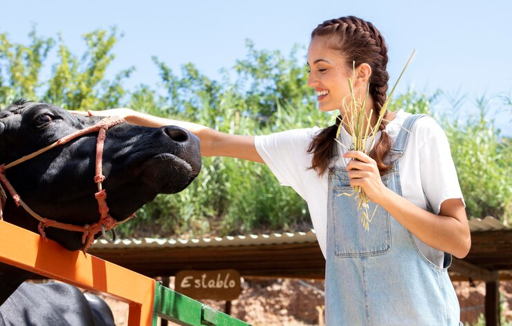
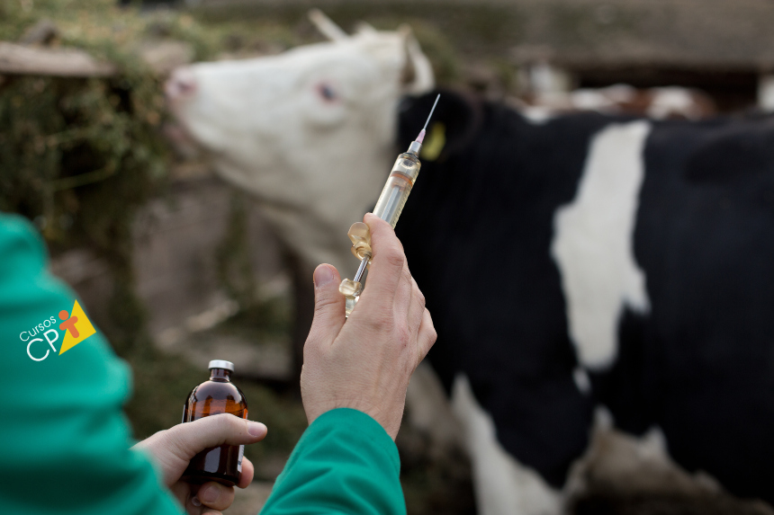
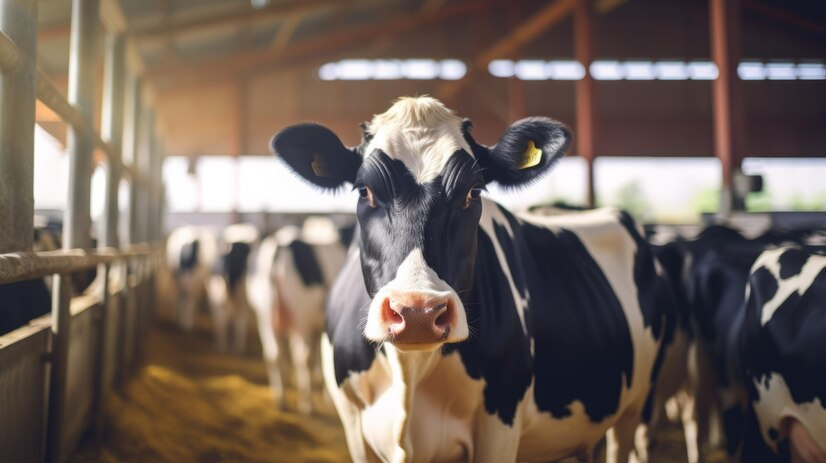

Cuidar das vacas leiteiras é essencial para garantir a saúde dos animais, a qualidade do leite produzido e a sustentabilidade da produção. Aqui estão os principais cuidados necessá
1. Alimentação:
Dieta Balanceada: As vacas leiteiras precisam de uma dieta rica em nutrientes, incluindoproteínas, carboidratos, fibras, vitaminas e minerais. A alimentação balanceada é crucial para aprodução de leite de alta qualidade. Forragem e Silagem: Forragem verde, como capim e alfafa, e silagem (milho ou sorgo ensilado) sãoas principais fontes de alimentação volumosa para as vacas, complementadas com rações concentradas. Água Limpa e Fresca: Disponibilidade constante de água limpa e fresca é fundamental para a saúde ea produção de leite.
2. Saúde e Bem-Estar:
Vacinação e Controle de Doenças: As vacas devem ser vacinadas regularmente contra doençascomuns, como febre aftosa e brucelose. Além disso, o monitoramento de mastite e outras infecções éessencial. Bem-Estar Animal: Garantir boas condições de alojamento, espaço adequado para movimento,ventilação adequada, e manejo suave são importantes para o bem-estar das vacas. Controle de Parasitas: Vermifugação e controle de parasitas externos, como carrapatos, sãoessenciais para prevenir doenças e manter a saúde do rebanho.
3. Ordenha e Manejo:
Higiene na Ordenha: A ordenha deve ser realizada com práticas rigorosas de higiene paraprevenir contaminações e infecções nos animais, como a mastite. Manejo Reprodutivo: Monitoramento do ciclo reprodutivo e inseminação artificial são práticascomuns para garantir a reprodução eficiente do rebanho. Secagem: Após um período de lactação, as vacas devem passar por um período de "secagem", onde nãosão ordenhadas para descansar e preparar-se para a próxima lactação.
4. Alojamento e Conforto:
Instalações Adequadas: As vacas precisam de abrigos que as protejam de intempéries eproporcionem conforto, como camas de areia ou serragem. Espaço e Movimento: É importante que as vacas tenham espaço suficiente para se movimentarlivremente e acesso a áreas externas, o que contribui para seu bem-estar e saúde. Ventilação e Temperatura: O controle da temperatura e ventilação adequada são importantes,especialmente em climas quentes, para evitar estresse térmico.
5. Monitoramento e Tecnologia:
Monitoramento de Saúde: Utilização de tecnologia para monitorar a saúde das vacas, como colarescom sensores que monitoram atividade, alimentação, e sinais de doenças. Gerenciamento de Dados: Sistemas de gerenciamento de rebanho ajudam a rastrear a produção de leite, a saúde reprodutiva e outros indicadores chave, permitindo uma gestão mais eficiente epró-ativa. Esses cuidados são essenciais para manter a saúde e o bem-estar das vacas, resultando em umaprodução de leite de alta qualidade e sustentável.